3-Section Quadrature Hybrid Coupler
Overview
Designed, simulated, fabricated, and tested a 3-section branch-line quadrature hybrid coupler in microstrip at center frequency f₀ = 9 GHz (target band: 6.75–11.25 GHz). A branch-line coupler splits the input power evenly between two output ports with a 90° phase difference, with the fourth port isolated. The 3-section topology was chosen to achieve the 50% fractional bandwidth requirement that a single-section coupler cannot meet while maintaining input reflection S₁₁ < −20 dB across the band.
Design Methodology
Topology Progression
Design began with a single-section coupler, which could not meet the bandwidth target while keeping S₁₁ < −20 dB. Progressed to a 2-section then 3-section branch-line topology, which placed the design within the required 6.75–11.25 GHz band.
Narrow Line Width Challenge
The 3-section design required very high characteristic impedances on the outer vertical branches, which translated to line widths below the 10 mil fabrication floor. Two solutions were explored:
- Stub design: Open stubs added to reduce effective impedance — functional but geometrically complex
- λ/4 taper design (chosen): Quarter-wave impedance taper on the edge branches, transitioning smoothly from the narrow high-Z lines to the wider 50Ω output lines. More manufacturable and simulation-validated.
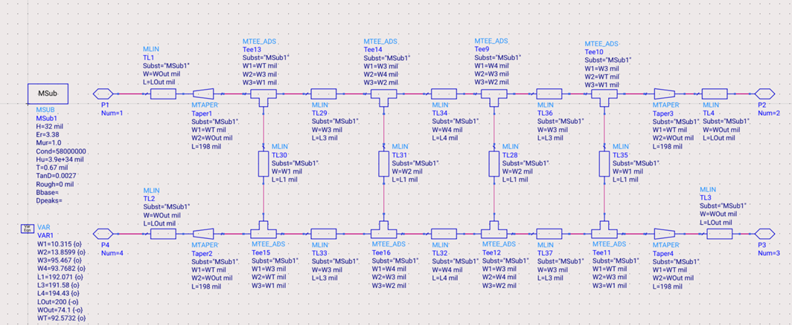
ADS schematic — 3-section branch-line coupler at f₀ = 9 GHz.
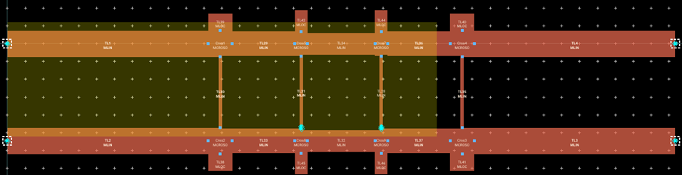
Stub design: open stubs to reduce effective Z on narrow branches.
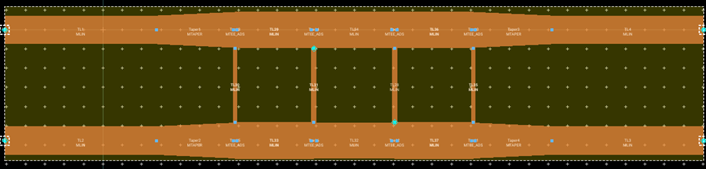
λ/4 taper design: continuous impedance transition on edge branches (chosen).
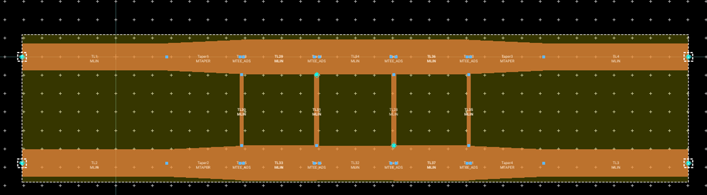
Final ADS layout with λ/4 tapers on outer vertical branches.
HFSS full-wave model, RO4003C substrate, λ/4 radiation boundary.
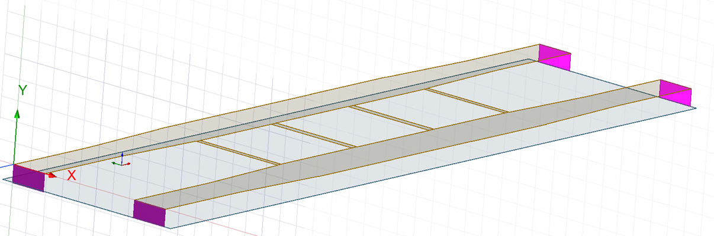
HFSS lumped port placement at each SMA pad.
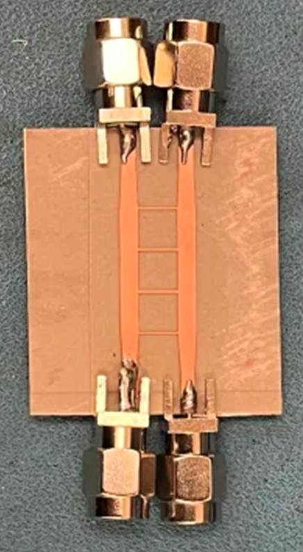
Fabricated PCB — top (copper trace side).
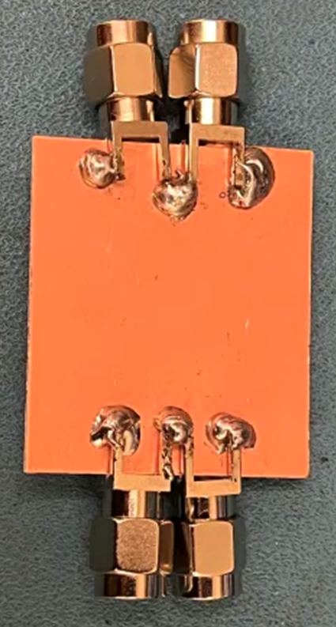
Fabricated PCB — bottom (ground plane).
Substrate & Fabrication
- Substrate: Rogers RO4003C, ε = 3.38, tanδ = 0.0027, H = 32 mil (0.032″), Cu = 0.5 oz
- Connectors: Adam Tech RF2-143-T-17-50-G SMA (18 GHz rated), soldered by hand
- PCB fabricated via Georgia Tech ECE fab facility (HIVE); Gerber files generated from ADS layout
- All line widths maintained ≥ 10 mil
Simulation Results
All 100% credit criteria met in both ADS and HFSS simulations over the target band (0.75f₀ – 1.25f₀ = 6.75–11.25 GHz):
| Parameter |
ADS Criterion |
ADS Result |
HFSS Criterion |
HFSS Result |
| S₁₁ (reflection) |
< −20 dB |
✓ < −20 dB |
< −15 dB |
✓ < −18 dB |
| S₄₁ (isolation) |
< −20 dB |
✓ < −20 dB |
< −15 dB |
✓ < −18.5 dB |
| Phase diff. (∠S₂₁ − ∠S₃₁) |
90° ± 3% |
✓ 90° ± 3% |
90° ± 5% |
✓ 90° ± 5% |
| Amplitude diff. (|S₂₁| − |S₃₁|) |
< 1.5 dB |
✓ < 1.5 dB |
< 3 dB |
✓ < 3 dB |
ADS Simulation
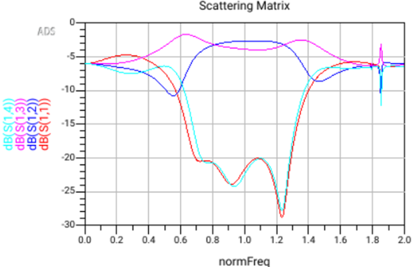
ADS S-matrix — S11, S21, S31, S41 across 6.75–11.25 GHz.
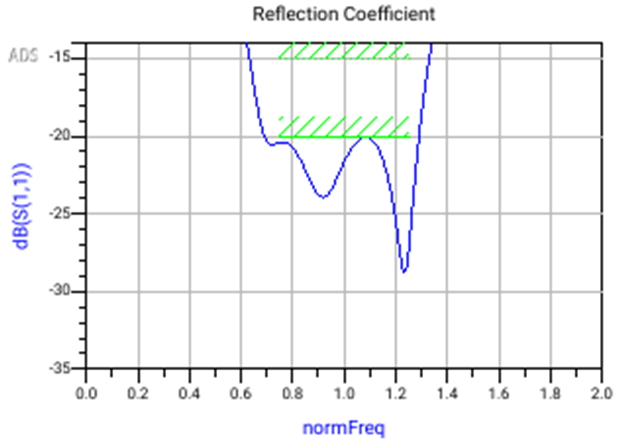
ADS S₁₁ — reflection < −20 dB across band.
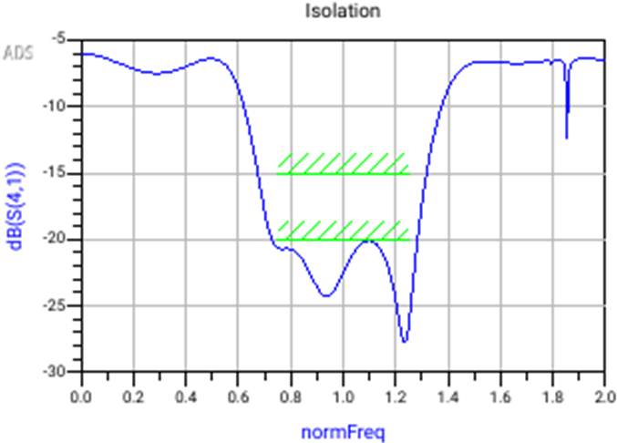
ADS S₄₁ — isolation < −20 dB across band.
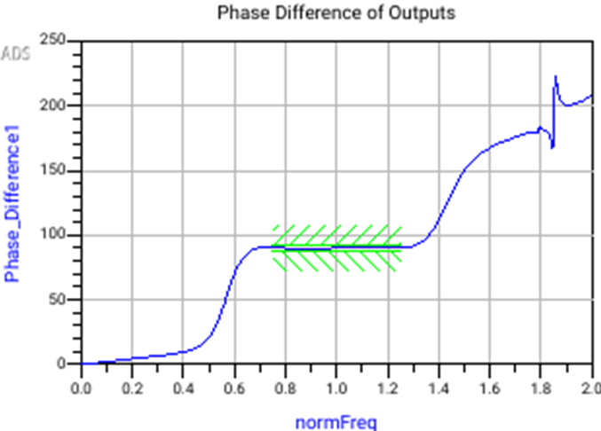
ADS phase difference (∠S₂₁ − ∠S₃₁) — 90° ± 3% across band.
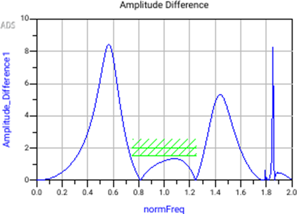
ADS amplitude difference (|S₂₁| − |S₃₁|) — < 1.5 dB across band.
HFSS Simulation
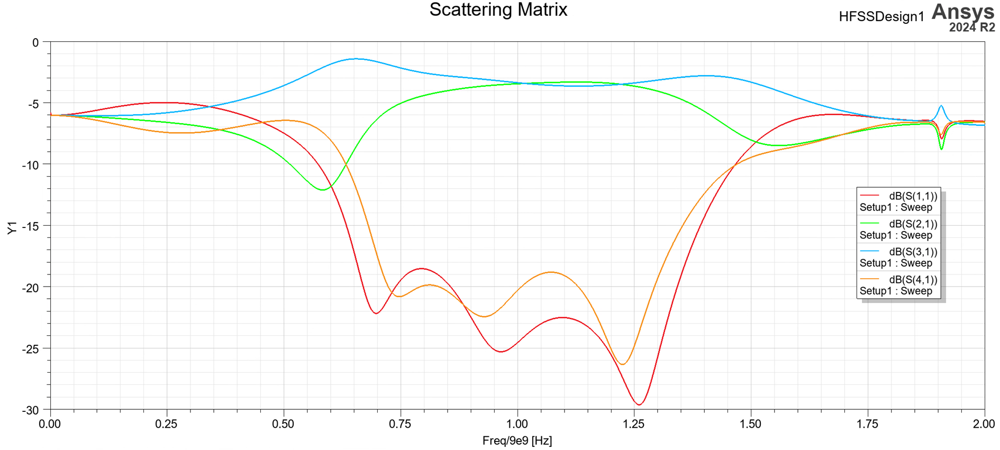
HFSS S-matrix — full-wave S11, S21, S31, S41.
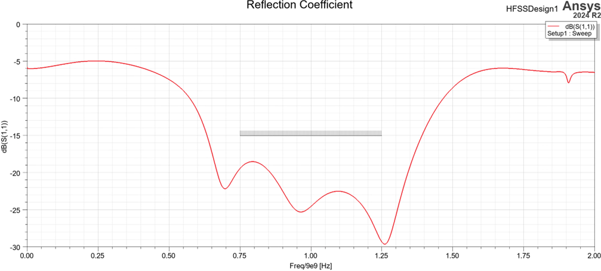
HFSS S₁₁ — reflection < −18 dB across band.
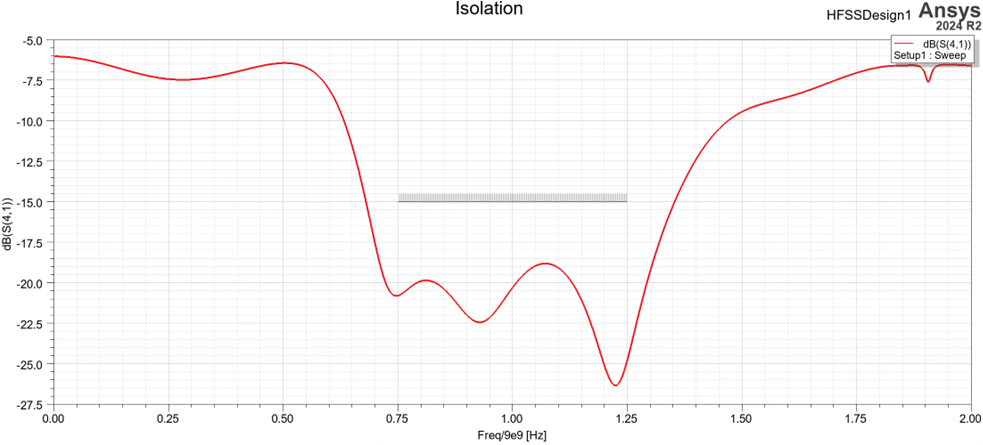
HFSS S₄₁ — isolation < −18.5 dB across band.
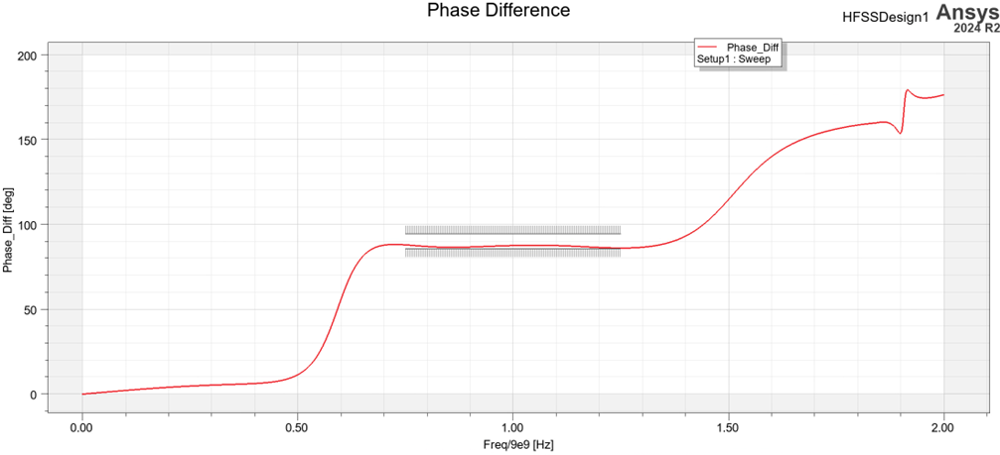
HFSS phase difference — 90° ± 5% across band.
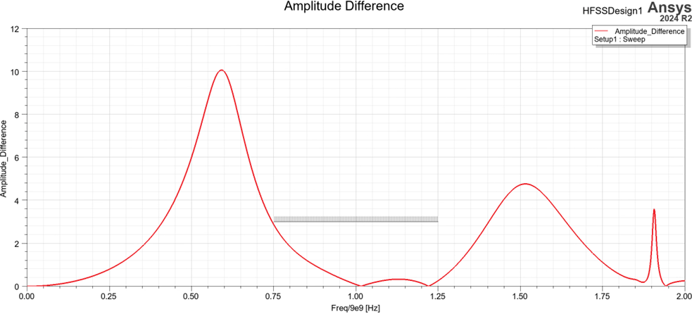
HFSS amplitude difference — < 3 dB across band.
VNA Test Results
The fabricated board was tested on a VNA using SMA connectors.
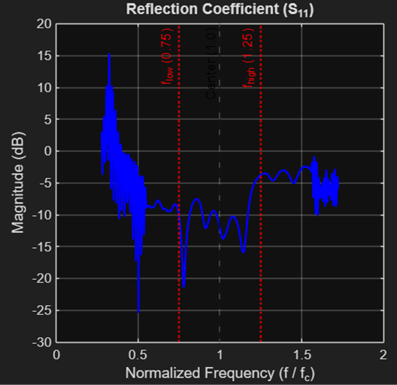
Measured S₁₁ — shape matches simulation, offset ~+6 dB (see discussion).
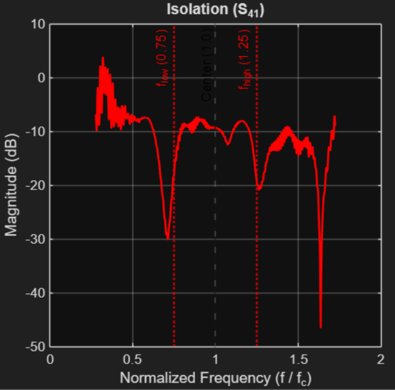
Measured S₄₁ — shape matches simulation, same systematic offset.
Discrepancy Discussion
Shapes closely match simulation but are shifted by approximately +6 dB. This discrepency was likely from the VNA calibration not accounting for the gender changer adapter, introducing a systematic loss offset. Limitations in the fabrication tolerance of the λ/4 taper, which had a continuous impedance transition rather than discrete multi-step sections, also contributed to the offset.
Tools
- Schematic & circuit simulation: Keysight ADS (MLIN microstrip library, optimizer)
- Full-wave EM simulation: Ansys HFSS 2024 R2 (lumped port model, λ/4 radiation boundary)
- Layout & Gerber: ADS layout
- Hardware: VNA, SMA connectors (Adam Tech RF2-143, 18 GHz), RO4003C PCB